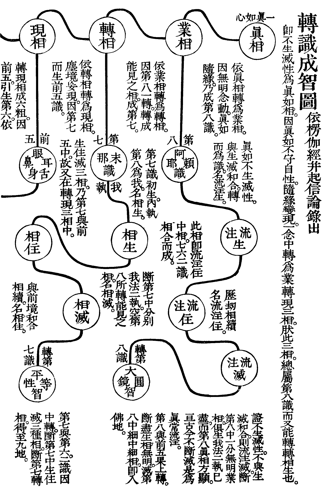
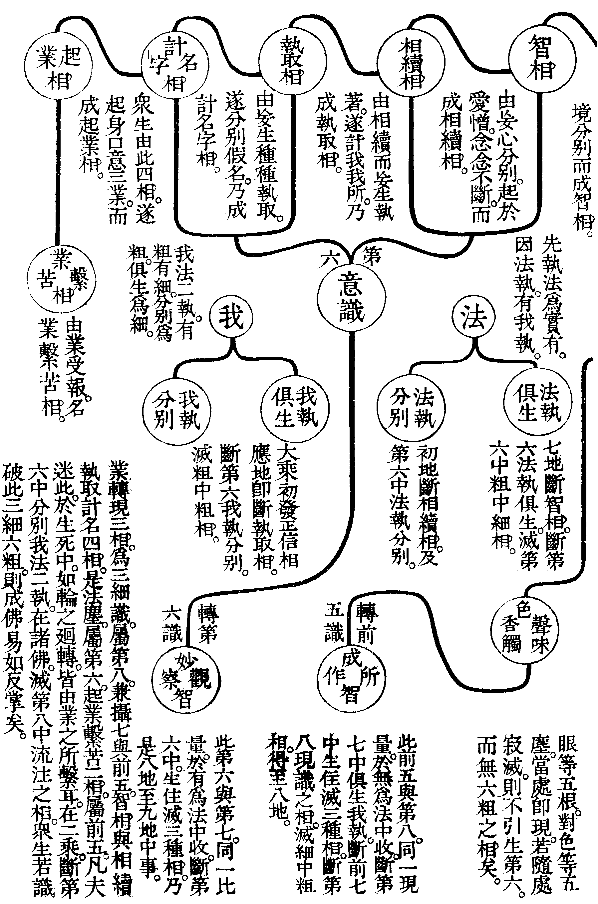

預
(與豫同。干也。在也。及也)。
金剛三昧經通宗記卷第三
無相法品第二之中
解脫菩薩而白佛言。尊者。若有眾生。見法生時。令滅何見。見法滅時。令滅何見。
此問滅見。發起性空義。意謂如佛言。若心之生滅。則令滅其妄心。若見法生時。一切法相。念念出生。見法滅時。剎那不住。念念遷滅。又當令其滅何等見耶。
佛言。菩薩。若有眾生。見法生時。令滅無見。見法滅時。令滅有見。若滅是見。得法真源。無入決定性。決定無生。
此示其性源。謂正當見法生起之時。便好識取本有之性。若二乘執法本無者。知畢竟非無。即可令其滅此無見矣。又如正當見法遷滅之時。便好識取本無之性。若凡夫執法本有者。知畢竟非有。即可令其滅此有見矣。若滅此有無二種妄見。則知前塵自相有無。於我何預。如此便得法性真源。達法本空。知心妄計。滅心妄見。於有於無。何有定執。若謂有不應無。云何剎那不住。若謂無不應有。云何念念出生。由是而觀。亦無有所入於決定之性。此乃為決定而住於無生者矣。此與真性空品為張本也。
解脫菩薩而白佛言。尊者。令彼眾生住於無生。是無生耶(北藏作也)。
此揀問誤解。
佛言。住於無生。即是有生。
此順遣其非。
何以故。無住無生。乃是無生。菩薩。若生無生。以生滅生。生滅俱滅。本生不生。心常空寂。空寂無住。心無有住。乃是無生。
此徵明其義。言自應無所住於無生。乃是無生。若生心住於無生。即以能生而滅所生。殊為不可。直須生滅二種妄心。俱乃寂滅。使本生之妄。更不復生。如是則心體常自空寂。既得空寂則無所住。若心既無有所住。乃真是無生矣。
解脫菩薩而白佛言。尊者。心無有住。有何修學。為有學耶。為無學耶。
此問修學之功。發起如來藏義。修者修於德業。學者學其道法。上古之世。無文字記識。若欲成一大業。先於木上。以刀斫痕計其數。名之曰業。凡一功成。即修去一痕。故聖人皆言修業。以木痕修盡。為卒業。其義如此。又學字。謂童穉初授書時。兩手捧持。如翫卦畫爻象而已。此學之義也。又學未滿。謂之有學。至無所學地。為無學。又研真斷惑名為學。真窮惑盡名無學。解脫謂心無有住。即同空寂。既是空寂。有何所修。有何所學。又問。得此無生之心。為是學未滿之有學耶。為是至無所學地之無學耶。
佛言。菩薩。無生之心。心無出入。本如來藏。性寂不動。
此示如來藏性。言無生之心。無有所住。亦無出入。即是眾生本來自性清淨如來之藏。其性體本自空寂不動。有出纏在纏二義。在諸佛證得。為出纏如來藏。眾生不了。為在纏如來藏。又在纏名如來藏。出纏號淨法身。此為如來藏品之張本。其義在後品中發明。
亦非有學。亦非無學。無有學不學。是即無學。非無有學。是為所學。
此明非學不學。言其不同二乘四果。有學無學之比。汝言有何修學。殊不知此中。無有學與不學。是即無學。非無有學。是即為所學也。
解脫菩薩而白佛言。尊者。云何如來藏性寂不動。
此問其名義。
此示相揀過。夫如來藏。本無生滅。本自空寂。皆由前七識。無始名言。有支及業。三種虗偽。惡習所熏。而為生相無明。轉為識藏。含藏一切種子。為善不善因。又依此藏識。復生住地無明。起前七現行。此住地無明。即與前七和合。由此現種相生。因生而有滅。因生滅而有慮知。因有此四相。故隱覆真理。不得顯現。然此生滅根源。實從如來藏。轉為識藏。而起於七識也。今眾生但為四相隱覆。而不知如來藏性。本無生滅。本自空寂。故不為其所動也。
解脫菩薩而白佛言。尊者。云何生滅慮知相。
此問揀過之相。
佛言。菩薩理無可不。若有可不。即生諸念。千思萬慮。是生滅相。菩薩觀本性相。理自滿足。千思萬慮。不益道理。徒為亂動。失本心王。
此示四種過。言如來藏中。真性之理。本無可之與否。若有可否。即有是非。有是非。即諸念紛飛而起。遂有千種思萬種慮。由此有菩提煩惱。更互相侵。不知此皆是生滅之相。若返觀於本性之相。其理本自滿足。若隨意識思慮。則不能益於至道之理。徒為其所動亂。而使心王失於所守矣。
若無思慮。則無生滅。如實不起。諸識安寂。流注不生。得五法淨。是為大乘。
此明五法淨。釋前修學之功効也。言若心無思慮。則無有生滅。便得入於真如實際之地。妄念決定不起。諸識安住空寂。流注之識不生。則五法皆淨。是謂之大乘也。
○楞伽經云。諸識有二種生住滅。謂流注生及相生。流注住及相住。流注滅及相滅。起信論中。謂第八中現識。三相微隱。是細中之細。名為流注。此流注。全是真如不生滅性。因無明不覺。忽與生滅和合。轉而為識。名流注生。長劫相續。名流注住。至等覺金剛道後。得一念相應慧。頓斷生相無明。此是業識動念。念中最細者。斷已。即轉第八識為大圓鏡智。轉前五識為成所作智。方滅第八中現識之相。名流注滅。此流注邊際。極為細微。唯佛及住地菩薩。真斷我法二執。證法性身者。方能知耳。其餘大乘資糧加行位中。以善巧方便觀察。遠離分別我法二執。轉第六識為妙觀察智。轉第七識為平等性智。觀生死涅槃平等。得證如來平等法身。初獲無分別智者。亦知之。既知此已。即以無分別智。觀察微細流注。若上品修。頓超十地。中品修。頓超八地。下品修。從地至地。漸斷漸證。直至十地。始能見自心微細妄想流注耳。此第八現識中。生住滅三種流注也。若生住滅三種相。乃前七識中相。但就前流注住中。分而為三。有細中之粗。是前五與七了境。粗中之細。粗中之粗。是第六了境。此三相為粗顯。如七識初生。執第八為我。名相生。即與前境和合。相續不斷。名相住。若大乘。從初發正信相應地。即斷執取相。是滅粗中粗相。即是斷第六我執分別。以第六分別事識。因第八現識計度。而生執取故。又從初地。證徧行真如。斷相續相。得隨分覺而見道。謂覺於念住。念無住相。以離分別粗念相故。即是斷第六法執分別。此亦是第六依第八現相計度。而生相續故。至七地斷智相。此亦是第六。因現識而成智相故。此斷第六法執俱生。此法執。以與身俱生。任運而起故。是滅粗中細相。總為第六了境。自八地斷現相。以第七唯內執第八為我。而無法執。此空第七俱生我執。又以前五識。依第八轉相而轉現相故。九地即斷轉相。以第七依第八業相。而轉轉相故。此二。乃前五與七了境。是滅細中粗相。是為相滅。然相。即流注中相。流注。即相中流注。若流注識滅。即得滅盡定。苟或微細習氣不滅。流注識亦不能滅。今觀眾生心中。剎那剎那。念念生滅。以何治之。其必觀生也。猶石女之懷胎。觀住也。若陽燄之翻波。觀異也。同浮雲之萬變。觀滅也。類狂華之謝空。觀剎那也。於真如心中。未嘗動著一纖毫意念。如是則流注與相。一切都盡。所以八地中菩薩。於滅盡定。能念念入。念念起。此滅第八識。轉現二相中。生住滅三種相。然尚有一分無始無明業相未斷。故十地悟入微細祕密愚。等覺金剛心。斷微細所知煩惱障。此所知與煩惱。名為二障。即從我法二執。根本上生。煩惱障大涅槃。所知障大菩提。唯識中。謂染法障所知境。令智不知。名所知障。故曰所知不是障。被障障所知。至等覺。方斷此二障。且於境上。猶有微細執著愚。及微細礙愚。所以云。等覺菩薩。猶坐在無明窟中。至妙覺解脫道。第八。依真相而轉業相。及前五。所依轉相而轉現相。一時滅盡。此是空第八。及前五中法執。而得入於佛地。即前所謂流注識滅。是滅第八中。一分無始無明業相。此業相滅。即流注滅。若流注滅。第八真相方顯。真相。即心真如相。乃亘古亘今。不斷不滅。雖則隨緣而生。本未嘗生。隨緣而滅。本未嘗滅。此即本覺心體。自古自今。不變不壞。其流注滅者。唯滅心相。而心體常存。以故謂之真常流注。因眾生迷此。故流轉三界。諸佛證此。即成等正覺。但相宗。論我法二執。有粗有細。粗者是分別。細者是俱生。又唯識百法中。前九十四種。是眾生分上。我法二執。後六種無為。是二乘菩薩。我法二執。又八識中。以六七皆有二執。五八俱無。性宗則五八。唯法執。七唯我執。六我法二執俱有。若無相無見。無分別。無二執者。真如也。又五法者。即楞伽中。所云相。名。妄想。如如。正智。是也。又云。五法三自性。及與八種識。二種無有我。悉攝摩訶衍。夫世間萬有。皆名相所攝。故凡有相即有名。皆吾人強為安立者也。然一切有形色者是相。即相而稱謂是名。因名相而生分別。是妄想。知此名相。自性本空。實無一法可立。亦無一法可遣。知一切法。其體空寂。離於所作。是如如。從如如之體。返觀一切名相妄想。猶如過客。來去不停。求其實相。了不可得。是正智。又楞伽別示三性八識二無我。亦以此五法收盡。葢三自性。一緣起自性。即名相。二妄想自性。如其名。三成自性。即是如如正智。又八識是名相妄想。若轉八識而成四智。即是如如正智。又二無我。謂人無我。法無我。我與法是名相。執我執法是妄想。證二空無我。即是如如正智。以故一切佛法。總不出此五法。且名初本無名。相初本無相。皆由妄計。謂此名非彼。彼相非此。若知其不實。無思慮計度生滅之相。即如智亦是假名。何有相之可得。若謂實有如智。亦屬妄想。如此則五法皆淨盡無餘矣。
菩薩。入五法淨。心即無妄。若無有妄。即入如來(自覺聖智)之地。入智地者。善知一切從本不生。知本不生。即無妄想。
此明入佛智地。夫自眾生至於佛地。無非皆欲空此五法而已。葢眾生流轉六道。只為執著名相妄想。而起毀譽愛憎。種種意言分別。若得名空。則毀譽不動。相空。則憎愛不生。名滅。則言語道斷。相滅。則心行處滅。若妄想滅。則一心獨顯。若得如如之體。則熾然作用而常在寂滅。若得正智。住煩惱即是菩提。處生死不異涅槃。如是則一切心識。所不能緣。名本無名。相本無相。名相既無。妄想非有。亦無正智。亦無如如。亦無佛無眾生。此所謂入五法淨。心即無妄。若無有妄。即入如來自覺聖智之地。此自覺聖智。是妙覺所證境界。如佛言。思惟無所有。佛地無生。到自覺聖趣。又云。此則是我地。自在最勝處。故知此即是佛智地。然入此智地。善知一切世間出世諸法。從本不自生。既知本不自生。又何有於妄想耶。此章總結無相中。無生。覺利。實際性空。如來藏。總持品之義也。


○楞伽中。佛嘗示七種第一義。即是此七品法。一謂心境界第一義。即心自性。更無分別。即是無相。二謂慧境界第一義。觀一切法。無不通達。而實無所有。即是無生。三謂智境界第一義。採集業。說心。不採集。是智。即是本覺利。四謂見境界第一義。得佛正知見。知一切色是佛色。一切聲是佛聲。即是入實際。五謂超二見。境界第一義。離有無。一異。俱不俱。一切對待。即是真性空。六謂超一子地境界第一義。初說三乘法。住一子地。今說一乘一性。故超一子地。即是如來藏。七謂如來自到境界第一義。即自覺聖智。不由他悟。通達佛法。此即諸佛善知之妙。但眾生迷本。即以此知。而變為妄想矣。故曰。知之一字。眾妙之門。亦眾禍之門也。後地藏菩薩。首問法不緣生。以收此中之義。
解脫菩薩而白佛言。尊者。無妄想者。應無止息。
佛言。菩薩。妄本不生。無妄可息。知心無心。無心可止。無分無別。現識不生。無生可止。是則無止。亦非無止。何以故。止無止故。
此明止無止義。正顯入如來自覺聖智境界。夫一切眾生。皆由前七識。執取五陰自相共相。乃有因緣生滅之法。而為妄想計著。相續不斷耳。所言自相者。謂自身現量證知。觸火則熱。入水則寒。非言說所及。是也。共相者。乃比量之境。是言說所及。如言一法。則貫通多法。共有此相。猶一切火。同一熱性。一切水。同一濕性。是也。又如假智。以詮自性之名。亦屬言說。亦是共相中收。故凡心生滅相。總只因自共二相。而有妄想計著之相續耳。又即於五法中觀之。不特名相妄想。是計著相續之相。若執如如正智為實有者。亦為妄想相續矣。何故以如如正智。良由對治名相妄想而設。究竟何有如如正智之可得耶。此所謂一真法界。纖塵不立。非凡愚所知。須是住地菩薩。證平等法性。始能知耳。以平等法性中。既無凡情。亦無聖解。觀察自心現量境界。知自共二相。心及心所。一切諸法。本來空寂。雖從自心顯現。猶如鏡現形。本無留迹。當處出生。隨處寂滅。於妄想計著相續。本自不生。亦無妄想計著相續之可以息。固知心之本無其心。無起無動。亦無心相之可止。如是則無分無別。即得第八現識。流注不生。當體空寂。更無有生之可止。是則謂之無止。然則亦非無止。以止於無止故。
○篆書以[止-一+┐][(ㄐ*〡)/(乏-之)]為步字。猶夫舉左足復進右足。斯謂之步。若左足已停而右足不起。乃謂之止。昔嘗論大學止於至善之義。猶夫人之前念後念。妄惑競生。逐惡流染而不知止。若知自己靈明性德。而止於至善。更不容有第二念。即謂之止。至者。極盡之稱。善者。精微之謂。是必當止於極盡精微明德之奧耳。吾固曰。此心一止。便得其正。又何有於私欲之萌念乎。此是孔門下手用功處也。且吾宗以第一念。為現量境界。故黃檗和尚云。頓超等妙二覺之表。決定不流至第二念。始似入我宗門。葢宗門全提大用。直下截斷意識分別。此是真止。如臨濟立第一句法云。三要印開朱點窄。未容擬議主賓分。何容心識籌度於其間耶。若向未舉已前。撩起便行。略較些子。纔生第二念。即落意識分別。便成妄想執著。相續不止。是為比量。此由外緣五塵。而比度其長短好惡等相。故為從上諸聖所訶。謂毫釐繫念。三途業因。瞥爾情生。萬劫羈鎖。至若比度不著。如夢中境。及病中狂亂所見。名為非量。此三量。是能緣之心。與五塵所緣之境。而為對現。於境有好惡長短。而心則依之。起於憎愛取捨。至乎躭染。習成善惡二性。以感苦樂二報。故流轉三界不已。奈何眾生迷此。不知皆從意識而起。若乃勘破妄心妄境。直下能所俱亡。分別不起。是真得無生可止。即能轉根本無明。為般若智光。於塵勞生死。顯大機大用。處處自在無礙。一一任運縱橫。如此。真得入自覺聖智之境界者也。
此徵止生之義。言若生止於無止之心。非可為之止矣。葢生心求止。止即是生。如三祖信心銘云。止動歸止。止更彌動。然今若求止之心已生。何以謂之無生耶。
佛言。菩薩。當止是生。止已無止。亦不住於無止。亦不住於無住。云何是生。
此示不住無止之義。然此但答止即是生一句。謂正當止息之時。而心雖是生。且念念無住。此止亦已無其所止矣。況亦不住於無止。亦不住於無住。云何而言止即是生耶。
此問無生取捨。徵前何謂無生一句之義。
佛言。無生之心。不取不捨。住於不心。住於不法。
此示無住之義夫一切法。若有所住。即有取捨。葢取捨者。只為五陰中。識陰未破。內取識藏謂之我。外取識所分別五塵。而為我之所。此是我執也。若既捨識藏。則又取能捨者而為我。所證者為我之所。是則名法執矣。此二執。即是心法二種。今言無生之心。於一切法。不取不捨。無生之相。而住於不心不法。則我法俱空。能所皆泯。乃為自覺聖智之實義也。
解脫菩薩而白佛言。尊者。云何住於不心。住於不法。
此問不心不法。徵前所示之義。
佛言。不生於心。是住不心。不生於法。是住不法。善男子。不生心法。即無依止。不住諸行。心常空寂。無有異想。譬彼虗空。無有動住。無起無作。無彼無此。得心空(北藏。作空心)眼。得法空心。五陰六入。悉皆空寂。
此重釋不生心法。因前問無生住何法相。故答住於不心不法。其實即不生心法一句。既不生心法。即無可依止。既無依止。即不住一切有為諸行。心常空寂。無有取捨可否是非。及一切異想。譬彼虗空。無有動相住相。無起相。無作相。亦無彼此之相。果能如是。即得心空。悟四大之無我。得法空。悟一切法無我。故曰得心空眼。得法空心。夫心空之眼即如來正法眼藏。法空之心。即如來涅槃妙心。從上佛祖惟契證。此心眼而已。所云五陰者。四大積聚是色。領納資貪是受。取相馳求是想。微細遷流是行。熾然分別是識。此五能覆真性。故名陰。然生因識有。滅從色除。六入者。眼耳鼻舌身意內六根。取著色聲香味觸法外六塵。有互相涉入之義。故曰入。然今既契證此心此法。而陰入等相。自然悉皆空寂者矣。後地藏菩薩。問諸法云何不一。以收此中之義。
善男子。修空法者。不依三界。不住戒相。清淨無念。無攝無放。性等金剛。不壞三寶。空心不動。具六波羅蜜。
此明空法具攝六度。夫空為大乘之初門也。然修此空法。不依三界。以出於三界有為法故。不住小乘有為戒相。以三輪體空故。自性清淨。無有念慮。離於散亂。無有攝心。離於懈怠。無有放意。性體等於金剛。不壞自性三寶清淨光明之體。夫自性常覺不昧。是佛寶。自性軌執不失。是法寶。自性清淨和合。是僧寶。又自心清淨。念念無染。即是佛。自心光明。無不照燭。即是法。自心清淨光明。處處無礙。即是僧。總不用外求。只在自性一心之中也。若信此一體三寶。即得空心不動。具六波羅蜜。梵語波羅蜜。此云到彼岸。又云度葢。謂世間有為法。祇在此岸。不得到彼岸。如人修施。以能施所施及受施者。為三輪。此三輪空寂。名無相無為。是到彼岸。若三輪不空。則因果不忘。如輪之迴轉。是世間有為法矣。六度中。皆具三輪。若不空。不得稱為六波羅蜜。又二乘人與菩薩。同行六度。但自利利人不同。又權教。只修六度為因。實教。先求悟明自心。既得明了。止息一切。惟修本性。惟欲度生。是名發菩提心。既已發心。應修諸行。成萬德莊嚴法身妙果也。
金剛三昧經通宗記卷第三